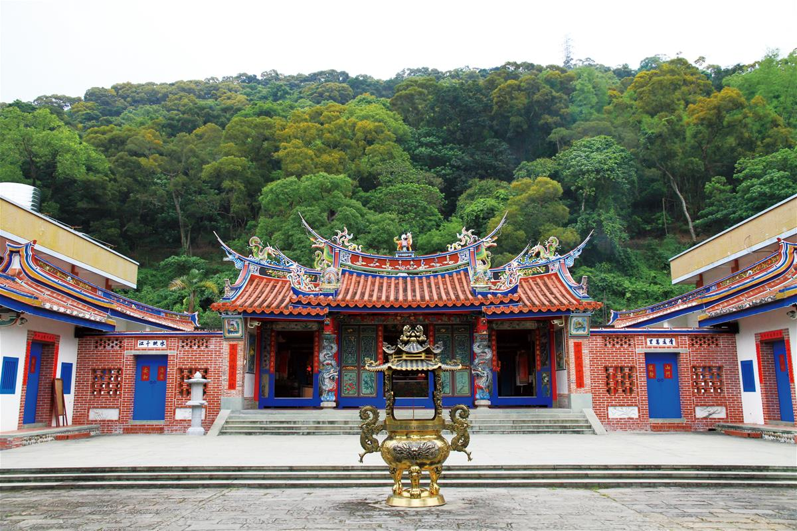

清水岩寺
清水岩寺起建至今已有兩百七十七年（建立於清朝雍正六年，公元一七二八年），曾在乾隆初年改建，至嘉慶四年才移至現在這個位置，是台灣最先供奉三寶佛的寺廟，與虎山岩、碧山岩合稱中部三大名岩，而清水岩寺又因地出泉水、風光明媚而有「清水春光」的美名，更是彰邑八景之一!
清水岩寺發展成為如此大的規模，與在家僧眾的支持與參與有莫大的關係，這些成就並非一朝一夕所能達成，戰前因為年代久遠缺乏資料考據困難，而戰後對於清水岩寺的發展有莫大影響力的莫過於蕭陳招春女士。
蕭陳女士由田中陳家嫁入社頭蕭家，屬於地方望族，由於蕭陳女士出錢出力大力贊助，清水岩寺才有今日大致的規模，蕭陳女士過世後由其媳婦蕭秀梅女士接任主任 委員，在現任村長陳慶福先生積極配合下，開始大力推動藝文活動及生態保育，透過兩代人的努力，以及社區民眾自主性的參與，清水岩寺不僅是地方的信仰中心， 而且發展成為兼具古蹟觀光與歷史文化、教育、休閒、保育、活動中心，更是全台最佳的心靈休息站。
| 門票 | 免費參觀 | |
| 地址 | 彰化縣社頭鄉清水岩路1號 | |
| 電話 | 04-8732306 | |
| 參觀時間 | 06:00–18:00 |